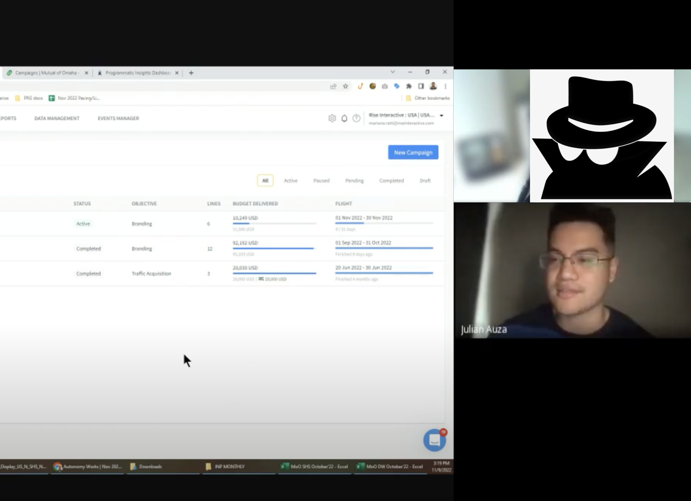
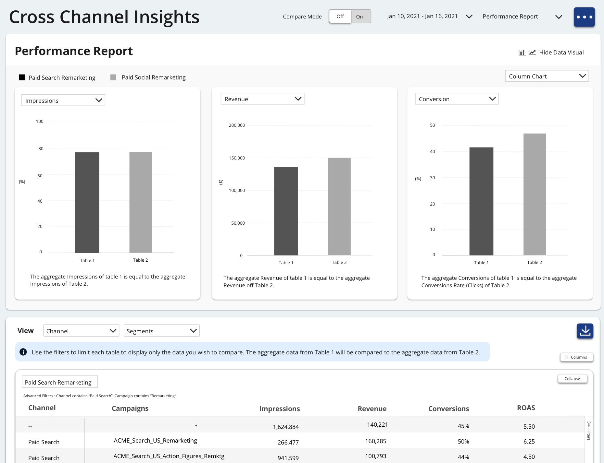
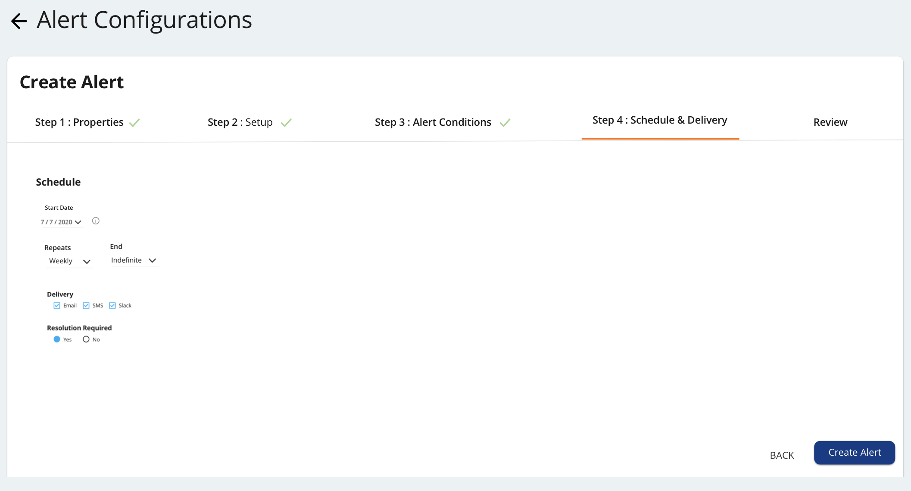
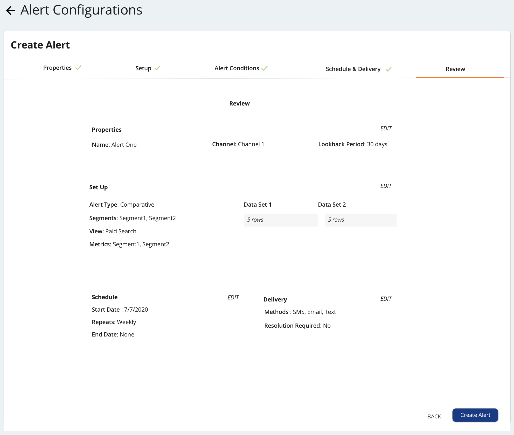

Marketing Campaign Alerts
Problem Statement:
Users spend in total 45 to 60 minutes of time checking on their client's marketing through-out the day and sometimes even over the weekends. Users found this frustrating because they would need to constantly be plugged into this task which causes a pain point because this workflow requires our users to consistently check on the client flight, budgets, spend, and marketing KPI's in order to manage their accounts effectively. This new feature allows users to manage campaigns by exception.
Role:
Experience Design
User Research
User Personas:
After conducting user survey and user interviews I was able to identify two main user personas that this feature would be serving.


Design process:
I learned as much as I could through our knowledge base articles and other product team members. I conducted user interviews and was able to put together lofi deisgns.


Final Designs:
My final design consisted of a step by step process that allowed user to focus on one part of the alert set up process at a time and a review page that allowed users to see the alert they created before saving it.


Results:
After the new feature was launched we saw an increase in Connex Platform adoption by 64% and a reduction of task completion time by 17%.
Additional Projects
Overview:
This page is for users to see all of their information at a glance. This is useful for weekly updates and monthly reporting with clients.

Prototypes
Below are some prototypes from different projects I utilized to communicate my designs effectively.
Project 1
Project 2
Project 3
Reflection:
I've been learning so much about marketing at Rise Interactive and I'm looking forward to growing and increasing visibility for the product team and showing the rest of the organization the value we bring.